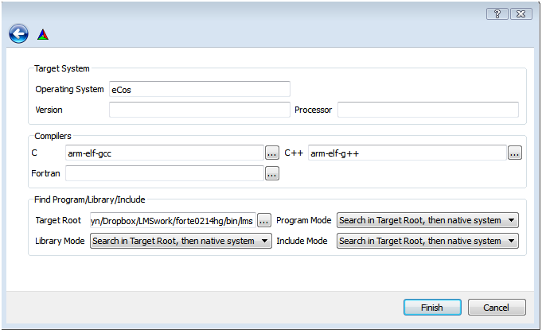

Building FORTE for Lego Mindstorms
LEGO is a trademark name and Mindstorms NXT is a registered trademark from the company LEGO. This tutorial uses eCos realtime operating system (RTOS) and FORTE on the ARM7 processor of the LEGO Mindstorms NXT Brick. The System of the Blink Tutorial can used with Lego Mindstorms (LMS) as a first test example. If you do not already use Eclipse with Cygwin please consider to get it, as it is described here.
- For Cygwin consider the eCos installation instructions.
- Install the GNU ARM toolchain
- Within the FORTE source create the directories bin/lego and copy the eCos include and lib directories into it.
- Open CMake-GUI, for source directory enter the FORTE project directory, for build directory, enter the previously created directory .../bin/lego and press the Configure button.
- From the dropdown choose: UNIX Makefiles and select Specify options for cross-compiling then press the Next button
- Specify options for cross-compiling:
- Operation System: eCos
- Compilers for C: arm-elf-gcc (need to include path if not installed under cygwin)
- Compilers for C++: arm-elf-g++ (need to include path if not installed under cygwin)
- insert the path to the target .../bin/lego
INCLUDE(CMakeForceCompiler)
# this one is important
SET(CMAKE_SYSTEM_NAME eCos)
# specify the cross compiler
CMAKE_FORCE_C_COMPILER(arm-elf-gcc GNU)
CMAKE_FORCE_CXX_COMPILER(arm-elf-g++ GNU)
# where is the target environment
SET(CMAKE_FIND_ROOT_PATH C:/.../FORTE/bin/lms)
# search for programs in the build host directories
SET(CMAKE_FIND_ROOT_PATH_MODE_PROGRAM NEVER)
# for libraries and headers in the target directories
SET(CMAKE_FIND_ROOT_PATH_MODE_LIBRARY ONLY)
SET(CMAKE_FIND_ROOT_PATH_MODE_INCLUDE ONLY)

- press the Configure button, check the following options an press the Generate button
FORTE_ARCHITECTURE_LMS #check
FORTE_COM_ETH #uncheck
FORTE_MODULE_xxx #check as needed
FORTE_USE_64BIT_DATATYPES #uncheck since not available in LMS
FORTE_USE_LREAL_DATATYPE #uncheck since not available in LMS
FORTE_USE_REAL_DATATYPE #uncheck since not available in LMS
- in Eclipse make all (Note: under cygwin in lms/bin directory make forte also works)
- Generate forte.bin separately or as part of flashing bat file arm-elf-objcopy --gap-fill 0xFF -O binary forte.elf forte.bin notice now .elf before no extension
- Ready to flash and test on LMS
Where to go from here?
Now that you installed the required tools, it's time to start using them. Take a look at the following page:
Step by step tutorial
If you want to compile FORTE for another platform or want to know more about that, here's a quick link back:
Install 4DIAC
If you want to go back to the Start Here page, we leave you here a fast access
Start Here page
Or Go to top